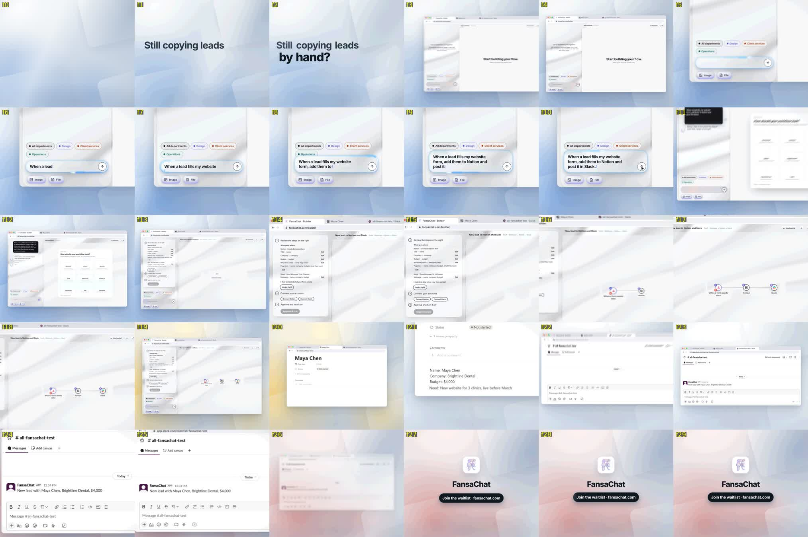
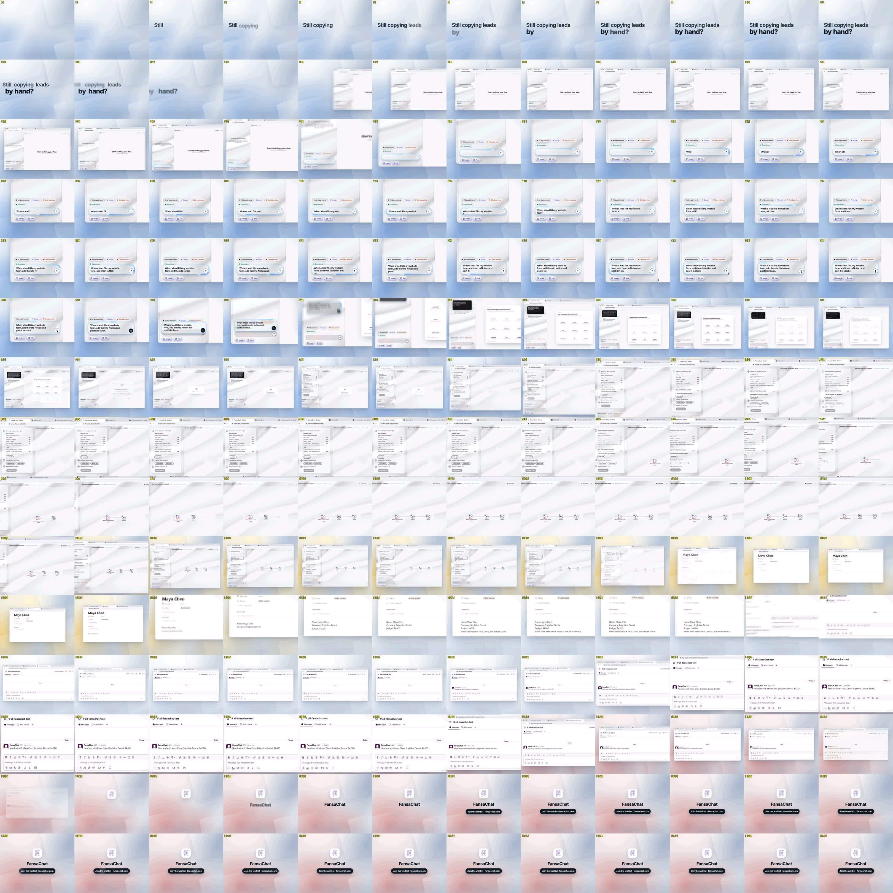

cue_f type detected_f delta_ms why
4 tick 3.96 -1.3 hook word 1 lands: tick
8 tick 7.98 -0.7 hook word 2 lands: tick
12 tick 12.00 +0.0 hook word 3 lands: tick
16 tick 15.96 -1.3 hook word 4 lands: tick
20 tick 19.98 -0.7 hook word 5 lands: tick
40 whoosh 40.68 +22.7 window slides in from the right (whoosh 1 of 2) [soft attack: +20 dB over the floor]
56 latch 55.98 -0.7 window lands: latch
62 swish 61.92 -2.7 zoom 1: camera glides into the composer (air swish)
82 key 81.96 -1.3 typing: soft key (characters appear this frame)
85 key 84.96 -1.3 typing: soft key (characters appear this frame)
88 key 87.96 -1.3 typing: soft key (characters appear this frame)
91 key 90.96 -1.3 typing: soft key (characters appear this frame)
94 key 93.96 -1.3 typing: soft key (characters appear this frame)
97 key 96.96 -1.3 typing: soft key (characters appear this frame)
100 key 99.96 -1.3 typing: soft key (characters appear this frame)
103 key 102.96 -1.3 typing: soft key (characters appear this frame)
106 key 105.96 -1.3 typing: soft key (characters appear this frame)
109 key 108.96 -1.3 typing: soft key (characters appear this frame)
112 key 111.96 -1.3 typing: soft key (characters appear this frame)
115 key 114.96 -1.3 typing: soft key (characters appear this frame)
118 key 117.96 -1.3 typing: soft key (characters appear this frame)
121 key 120.96 -1.3 typing: soft key (characters appear this frame)
124 key 123.96 -1.3 typing: soft key (characters appear this frame)
127 key 126.96 -1.3 typing: soft key (characters appear this frame)
130 key 129.96 -1.3 typing: soft key (characters appear this frame)
133 key 132.96 -1.3 typing: soft key (characters appear this frame)
136 key 135.96 -1.3 typing: soft key (characters appear this frame)
139 key 138.96 -1.3 typing: soft key (characters appear this frame)
142 key 141.96 -1.3 typing: soft key (characters appear this frame)
152 click 151.98 -0.7 press send: click
170 latch 169.98 -0.7 glass box lands in the sent bubble: small latch
192 swish 192.96 +32.0 zoom 2: push onto the reply (air swish) [soft attack: +20 dB over the floor]
230 tick 229.98 -0.7 node 1 (form) connects: tick
240 tick 240.48 +16.0 node 2 (Notion) connects: tick
250 tick 249.96 -1.3 node 3 (Slack) connects: tick
264 swish 264.78 +26.0 zoom out to the wide (falling air swish) [soft attack: +20 dB over the floor]
286 paper -- -- Notion page slides in: paper slide [NOT FOUND]
326 whoosh 326.28 +9.3 Notion out / Slack in (whoosh 2 of 2) [soft attack: +20 dB over the floor]
344 chime 343.98 -0.7 Slack message arrives: short glass chime
394 chime 393.96 -1.3 logo lands: soft chime [soft attack: +20 dB over the floor]
406 tick 405.96 -1.3 CTA pill lands: soft tick
transients inside a playing cue (the same sample, e.g. a latch release): 59.10 (tick_04.wav @20), 173.16 (key_18.wav @136), 241.38 (tick_001.ogg @230), 290.52 (swish_c.wav @264)
UNEXPECTED onsets (no cue playing): none
SFX count per type: chime 2, click 1, key 21, latch 2, paper 1, swish 3, tick 9, whoosh 2
same sample twice within 1.5 s: none
cues not found: 1
stem frames > -50 dBFS outside any cue window: none
Threshold: -24.8 LUFS
Loudness range:
LRA: 7.3 LU
Threshold: -35.4 LUFS
LRA low: -19.0 LUFS
LRA high: -11.8 LUFS
True peak:
Peak: -1.2 dBFS
[out#0/null @ 0x60bd9ca9cb40] video:183KiB audio:2816KiB subtitle:0KiB other streams:0KiB global headers:0KiB muxing overhead: unknown
frame= 450 fps=0.0 q=-0.0 Lsize=N/A time=00:00:15.00 bitrate=N/A speed=19.4x elapsed=0:00:00.77